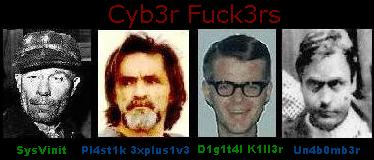

Nós, brasileiros de todas as partes, de todas as raças, de todos os credos, de todas as classes, insatisfeitos, preocupados e possuídos de absoluta desesperança com o quadro político vigente, cientes de que as organizações políticas anuais não correspondem aos anseios do povo como um todo, decidimos fundar o Movimento Revolucionário 7 de Setembro (MR7).
O Brasil vive, em nosso tempo, um momento crucial de sua história como nação, talvez o pior, se análise for feita em termos de alguns parâmetros como economia, educação e saúde.
Esmagado pela pressão internacional, assolado por crises internas, o país vem mergulhando, nas últimas décadas, em um processo de indefinição política onde é notória a ausência de autoridade em tudo aquilo que se faz ou se planeja fazer.
De ação centralizadora, das décadas de 60 e 70, que esmagava o livre pensamento e silenciava as vozes de oposição, chegou-se, num processo dialético, à sua antítese, à não-autoridade, à não-decisão, à não-realização, à inação, à quase anarquia. O país está à beira do caos.
A ação de qualquer agrupamento social – de uma escola, de um hospital, de uma empresa, enfim, de qualquer organização dentro da sociedade – é, em última análise, o reflexo do que se passa no vértice da pirâmide social, ou seja, no Governo.
Todo poder existe para ser efetivamente exercido. E convivemos todos nós, neste país, com uma absoluta crise de autoridade.
Diante dos acontecimentos que têm chocado a nação nos últimos tempos, alguns até com repercussão internacional, todos divulgados à farta pela Imprensa, procuram-se e não se encontram os responsáveis diretos pelos fatos. A responsabilidade se dilui, como está diluída a autoridade.
É fundamental que seja restaurada a autoridade em todos os níveis da ação pública e, com ela, a responsabilidade. Não existe autoridade sem responsabilidade. A existência de uma implica a outra.
Textos e Protestos
Um país rico e um povo pobre
Somos hoje a oitava potência industrial do mundo. E, no
entanto, dois em cada três brasileiros ganham menos de dois salários mínimos mensais,
vale dizer, vivem mal, moram mal, comem mal e não dispõem de proteção contra
desemprego, a doença e a velhice.
Somos o quarto exportador mundial de alimentos, mas,
segundos dados da ONU, ocupamos o sexto lugar em subnutrição, perdendo apenas para
Índia, Bangladesh, Paquistão, Filipinas e Indonésia. Hoje em dia, sete em cada dez
brasileiros, por falta de emprego, remuneração justa e acesso à terra, estão abaixo do
padrão alimentar definido como mínimo pelo Programa da ONU de combate à fome e pela
Organização Mundial de Saúde.
Segundos dados do organismo da ONU de proteção à
infância (Unicef), meio milhão de crianças morrem de fome por ano no Brasil. É como
se, ano após ano, debaixo do silencio e da indiferença de todos, a população inteira
de uma cidade como Santos desaparecesse vítima de uma catástrofe natural.
Protesto do Povo
O governo de sua Excelência, o Presidente da República,
tem feito tratados com potências estrangeiras, contrários ao interesses e à dignidade
da nação.
Cobra do povo altos impostos e não zela o dinheiro
público.
Tem contraído dívidas tais e por tal maneira que ameaçam
a ruína da nação.
Tem permitido contrabandos vergonhosos e extremamente
prejudiciais.
Faz leis sem utilidade pública e deixa de fazer outras de
vital interesse para o povo.
Esgota os cofres nacionais com despesas supérfluas e não
cuida do melhoramento material do país.
Não aproveita nem ao menos sabe conservar as riquezas
naturais do subsolo brasileiro.
Esse governo tem estabelecido o projeto de nos submeter à
mais terrível escravidão e à tirania mais desprezível.

"Nemo me impune
lacessit"
"In pace requiescat"